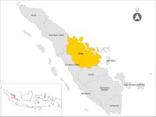
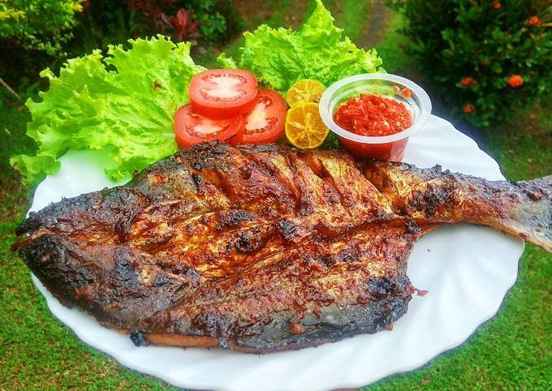
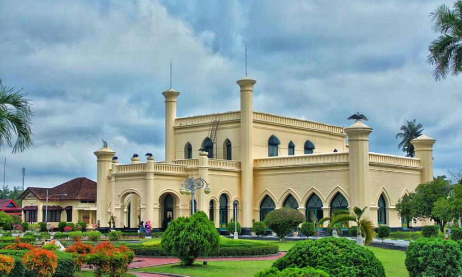

Sejarah
Riau, sebuah provinsi di Indonesia yang terletak di bagian timur Pulau Sumatra, memiliki sejarah yang kaya dan beragam. Wilayah ini telah menjadi pusat perdagangan dan budaya sejak zaman kerajaan Melayu, dengan posisi strategisnya di jalur perdagangan maritim. Pada abad ke-17, Riau menjadi pusat kekuasaan Kesultanan Johor-Riau yang berkuasa atas sebagian besar wilayah Sumatra Timur dan Kepulauan Riau. Kemudian, pada abad ke-19, Riau menjadi pusat kegiatan perdagangan rempah-rempah di bawah pengaruh kolonialisme Belanda dan Inggris. Setelah kemerdekaan Indonesia pada tahun 1945, Riau menjadi salah satu provinsi di Indonesia, dan sejak itu terus berkembang menjadi pusat ekonomi, pariwisata, dan budaya yang penting di wilayah tersebut.
Riau adalah sebuah provinsi di Indonesia yang terletak di pantai timur pulau Sumatra bagian tengah. Wilayah pesisirnya berbatasan dengan Selat Malaka. Hingga tahun 2004, provinsi ini juga meliputi Kepulauan Riau, sekelompok besar pulau-pulau kecil yang terletak di sebelah Timur Sumatra dan sebelah Selatan Singapura.
Makanan Khas
Makanan khas Riau mencerminkan kekayaan budaya dan keberagaman etnis yang ada di provinsi tersebut. Diantaranya adalah ikan patin panggang dengan bumbu rempah khas Melayu yang menggugah selera, gulai tempoyak yang merupakan hidangan tradisional berbahan dasar durian fermentasi yang diolah dengan santan dan rempah-rempah, serta nasi dagang yang terbuat dari campuran beras dan ketan yang dimasak dengan santan dan disajikan dengan hidangan lauk pauk seperti ikan tongkol atau ayam. Selain itu, ada juga keripik ikan bilis yang merupakan camilan ringan yang terbuat dari ikan bilis yang diolah dengan cara digoreng kering, dan terakhir adalah dodol Riau yang merupakan cemilan manis yang terbuat dari campuran ketan, gula merah, santan, dan rempah-rempah yang memberikan cita rasa khas dan kenikmatan tersendiri.
Berikut Beberapa Makanan Khas dari Riau
Ikan Patin Panggang

Roti Canai

Wisata
Riau menawarkan beragam destinasi wisata yang memikat, memadukan pesona alam, sejarah, dan budaya. Salah satu atraksi utamanya adalah Taman Nasional Tesso Nilo, rumah bagi populasi harimau Sumatera yang langka serta habitat yang subur bagi berbagai flora dan fauna endemik. Bagi pecinta sejarah, Istana Siak Sri Indrapura menjadi saksi bisu kejayaan Kesultanan Siak yang mempesona dengan arsitektur klasiknya dan museum yang menggambarkan sejarah dan kebudayaan kawasan tersebut. Wisatawan juga dapat menikmati keindahan alam Riau melalui Pulau Penyengat, yang mempesona dengan situs-situs bersejarah, pantai berpasir putih, dan atmosfer yang tenang. Sementara itu, Wisata Kuliner Jalan Sudirman menawarkan pengalaman kuliner yang tak terlupakan dengan berbagai hidangan lezat dan unik khas Riau. Dengan berbagai pilihan destinasi menariknya, Riau menjadi tempat yang menarik untuk dijelajahi bagi para pelancong yang mencari petualangan dan keindahan alam yang autentik.
Kerajaan Siak Sri Indrapura

Geografi
Riau adalah sebuah provinsi yang terletak di bagian tengah Pulau Sumatera, Indonesia. Dikenal dengan kekayaan sumber daya alamnya, Riau memiliki hutan hujan tropis yang luas serta merupakan salah satu produsen utama minyak kelapa sawit dan karet di Indonesia. Ibukota provinsi ini adalah Pekanbaru, sebuah pusat urban yang berkembang pesat, sementara Kota Dumai adalah salah satu pelabuhan utama di wilayah ini. Selain itu, Riau memiliki kekayaan budaya yang kaya, tercermin dalam beragam tradisi, seni, dan adat istiadat yang masih dijaga dengan baik oleh masyarakatnya.